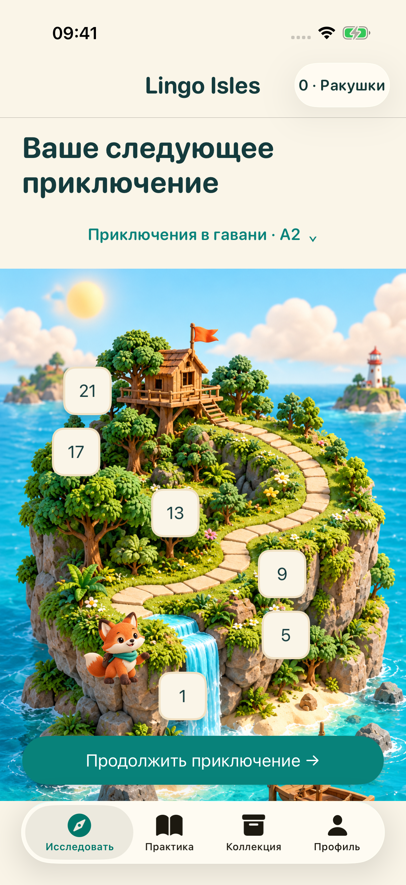
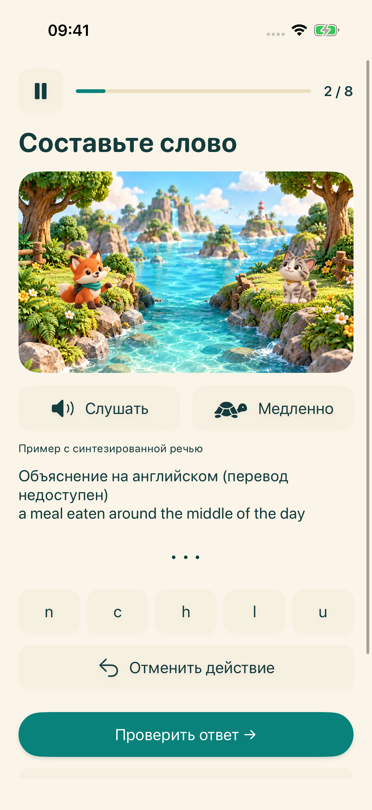
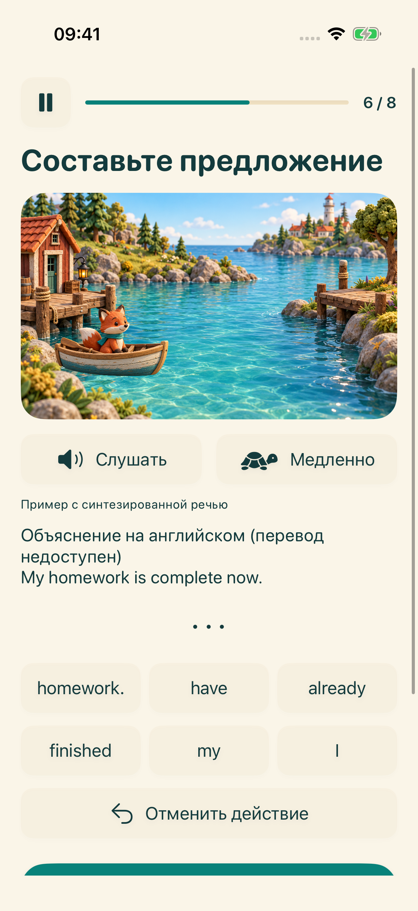
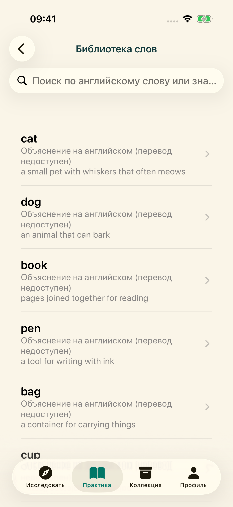

Следующий остров ждёт вас
Выберите этап обучения и следуйте по тропе коротких упражнений по английскому.
Откройте четыре учебных острова. Слушайте, составляйте слова и предложения, пробуйте говорить — одно маленькое открытие за другим.
Начните знакомство с приключениемГотовится запуск на iPhone и iPad


Выберите этап обучения и следуйте по тропе коротких упражнений по английскому.

Слушайте системный синтез речи и расставляйте буквы, тренируя английское правописание.

Расставляйте слова по порядку и узнавайте, как строятся английские предложения.

Изучайте словарь, сохраняйте избранное и повторяйте пройденное.

Запишите, прослушайте и попробуйте снова. На совместимых устройствах доступна необязательная расшифровка речи на устройстве. Это тренировка без оценки произношения.
Интерфейс поддерживает 16 языков. Учебные пояснения доступны на английском и упрощённом китайском; для других языков при отсутствии перевода показываются пояснения на английском с явной пометкой.
Учебные материалы и прогресс хранятся на вашем устройстве. Учётная запись и облачная синхронизация от разработчика не требуются. Голосовые ресурсы зависят от устройства; для рекламных служб и служб конфиденциальности нужно подключение к сети.
Профили младше 18 лет или без возрастной группы не запускают рекламный процесс. Для взрослых показ рекламы зависит от настроек конфиденциальности и доступности. Просмотр рекламы за награду необязателен.